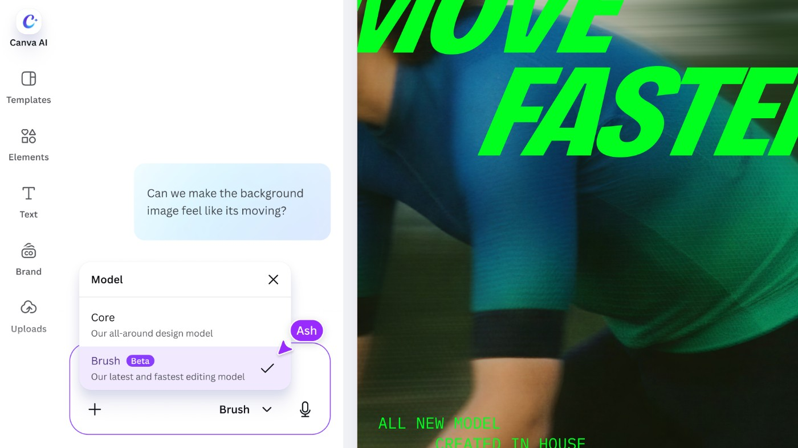
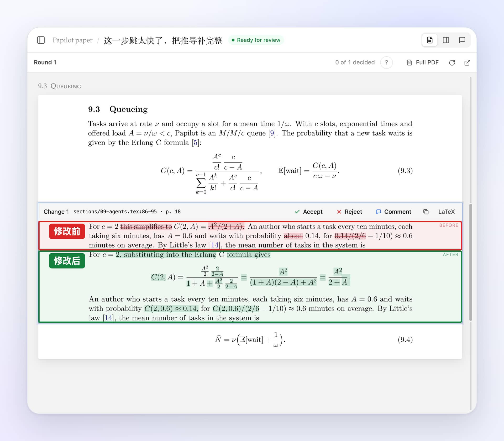
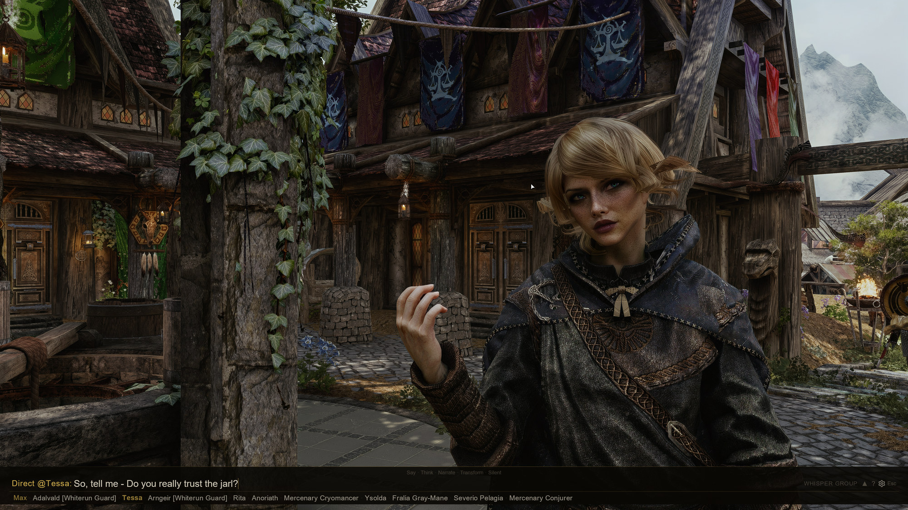
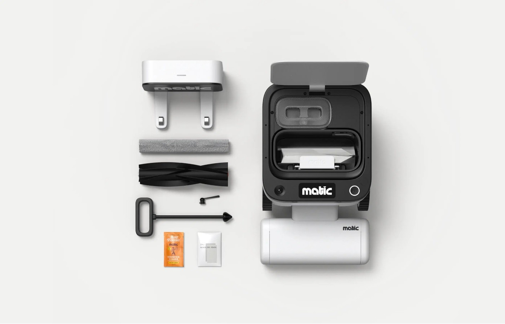
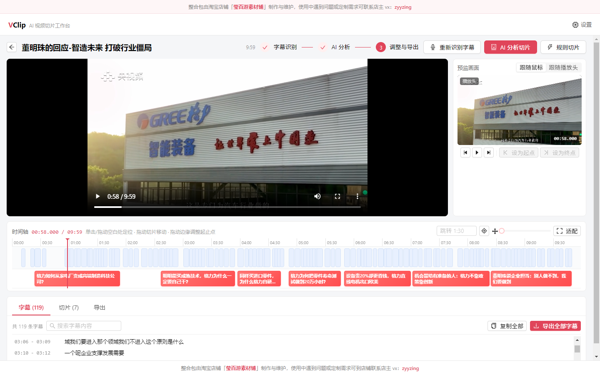
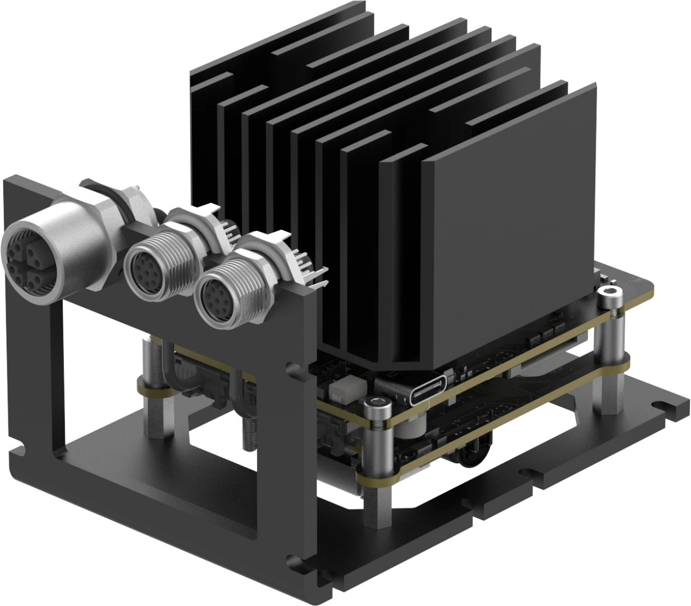
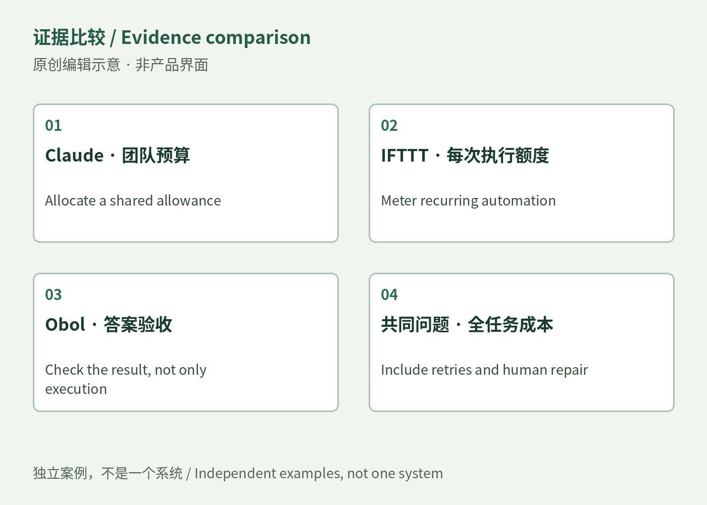
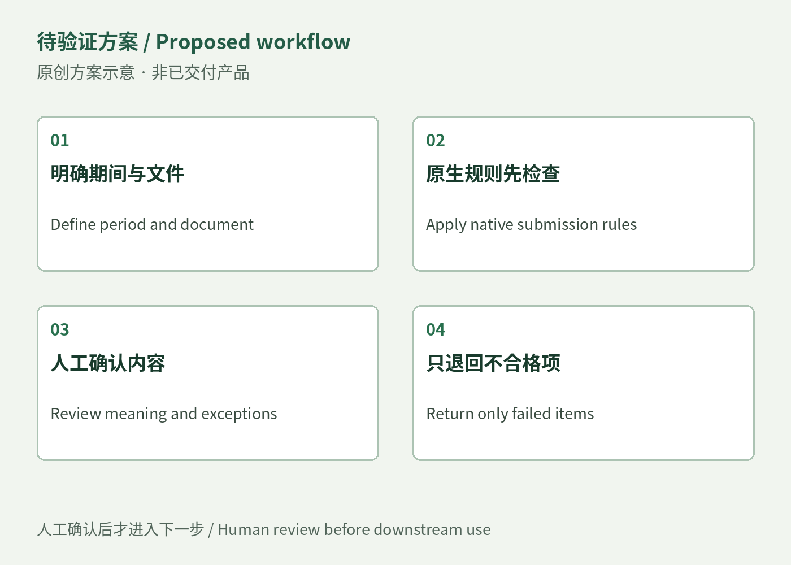
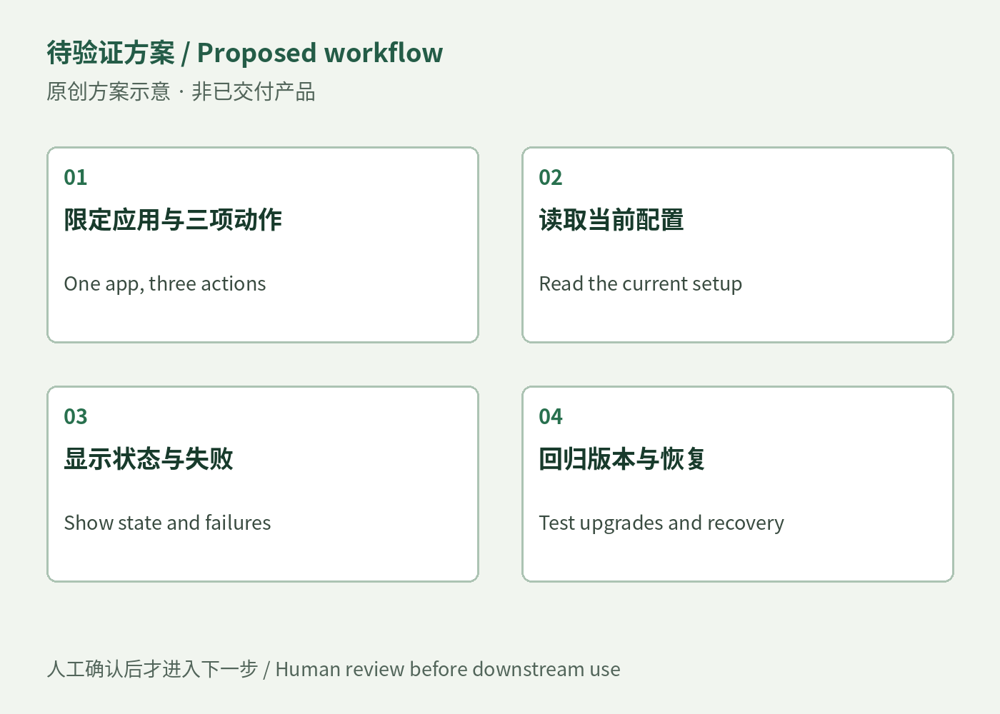

Editable objects, accepted edits and delivery are distinct states.
[S04] [S12]AI PRODUCT WEEKLY / OCT 26–NOV 1, 2026
This week: what happens after the edit?
Editable designs, touch controls, paper revisions and game dialogue; document acceptance, specialist control bridges and the responsibilities in design vacancies.
October 26–November 1, 2026 · Complete calendar week
Explore this week →
AI PRODUCT WEEKLY / OCT 26–NOV 1, 2026Oct 26 00:00–Nov 2 00:00 · Toronto
Products, opportunities and talent
Discoverable touch controls and less interruption matter in use.
[S06] [S17]Setup, acceptance and support cost time; offers are not completed sales or hires.
[S46] [S57]- 01Canva Brush revises a whole design while leaving individual objects editableCanva Brush · Product · official update
- 02Touch on Mac exposes the controls that a finger cannot findTouch on Mac · Developer surface · touch interaction preview
- 03Papilot connects PDF feedback to source edits and delays delivery until reviewPapilot 0.7.0 · Open source · release
- 04SkyrimNet joins menu choices to spoken role-play and room-level memorySkyrimNet Beta29 · Community project · maintainer release
- 05Matic Serene redesigns its vacuum stack to target a prominent toneMatic Serene · Home robot · hardware revision · vendor measurements
- 06VClip proposes clips from transcripts, with an explicit export tradeoffVClip v0.3.4 · Independent maker · open-source desktop workbench
- 07OAK 4 FFC lets robot builders arrange five camerasLuxonis OAK 4 FFC · Developer hardware | vendor announcement and specifications
- 08Continuing agents need clear approval scopes and delivery targetsAction target and delivery boundary · Cross-product signal · baseline building
- 09Shared budgets make agents easier to start; spending still needs a verified outcomeBudgets and verified outcomes · Cross-product signal · baseline building
- 10Players want characters to remember them—and a way to silence voices that do not fitSkyrimNet and roleplay continuity · Consumer observation · community and mod
- 11An uploaded file still needs to be the right documentDocument acceptance setup / Content Snare × Docparser · Business opportunity / historical user reports and current tools
- 12A control panel has to save setup and report state reliablyWorkflow-specific control bridges / DeckBridge comparator · Business comparator / existing plugin and historical user friction
- 13Hiring: physical operations, AI interaction and subscriptions need different design work远程雇员岗位与混合办公 / Employment and hybrid roles · Employer listings / November 2 recheck
- 14Contract work: distinguish a four-day week from a deliverable-based engagement合同、兼职与顾问项目 / Contract, part-time and consulting · Employer listings / November 2 recheck
- 15Talent demand: AI judgment, design systems and production responsibility share a role市场人才诉求 / Talent-demand observations · Employer listings / November 2 recheck
AI PRODUCT WEEKLY / OCT 26–NOV 1, 2026Product · official update · 2026-10-29 · Weekly highlight
Canva Brush revises a whole design while leaving individual objects editable
Brush takes a revision request into an existing presentation or graphic.
Open or attach the design, choose Brush, and describe the edit. The result remains a set of objects that can be adjusted manually.
This week adds a model that executes editing code and inspects the page; the previous week’s Craft focused on image generation.
Launch access covers supported Pro edits. Brand Kit, reference attachments and image-heavy layouts remain unfinished; conversational editing offers Stop and undo.
Takeaway
Try a named object on a specified page, then inspect what should have stayed unchanged. Styling does not validate text or charts.
AI PRODUCT WEEKLY / OCT 26–NOV 1, 2026Developer surface · touch interaction preview · 2026-10-28 · Weekly highlight
Touch on Mac exposes the controls that a finger cannot find
Apple’s October 28 materials prepare Mac apps for direct touch. A person may move a canvas by hand, then use a pointer or keyboard for precise work; touch itself is not an AI feature.
Teams need to inspect hover-only actions and the content covered when sliders or dials expand.
Code examples separate gesture phases and enlarge touch hit regions. The 36-point value belongs to one example.
Xcode 27.3 beta is still forthcoming; tutorials do not establish SDK delivery or hardware availability.
Takeaway
Review selection, action discovery and recovery through a complete editing task, rather than judging adaptation by larger buttons.
Apple Developer · 2026-10-28 · Original product sources · 原文 / Original ↗Observed / rechecked 2026-11-02 05:43Z · [S06] [S07] [S08] [S09]
AI PRODUCT WEEKLY / OCT 26–NOV 1, 2026Open source · release · 2026-10-31T03:11:00Z · Weekly highlight
Papilot connects PDF feedback to source edits and delays delivery until review

Papilot lets LaTeX authors point to a problem on the rendered PDF instead of searching for its source first.
Select text or an equation region and add a note. SyncTeX locates the source; an agent edits and recompiles, then presents a typeset comparison.
Version 0.7 groups notes by color and holds accepted edits in new tasks until the user chooses a working directory or task branch.
Existing tasks keep their prior delivery behavior. The local workspace still needs Git, TeX and a signed-in agent; model costs remain separate.
Takeaway
The reviewer sees changes in the paper’s reading format, while still checking the argument, references and mathematics.
Papilot 0.7.0 · 2026-10-31 · Original product sources · 原文 / Original ↗Observed / rechecked 2026-11-02 05:44Z · [S10] [S11] [S12]
AI PRODUCT WEEKLY / OCT 26–NOV 1, 2026Community project · maintainer release · 2026-10-31T01:26:27Z · Weekly highlight
SkyrimNet joins menu choices to spoken role-play and room-level memory

SkyrimNet lets Skyrim players speak or type to NPCs. Beta29 connects authored dialogue menus more closely to free conversation.
Choose a menu line: the player character speaks before the NPC answers. Another click skips it; leaving the menu stops it.
Internal voicing removes the DBVO dependency for that feature. Players can label rooms so events and memories carry a more specific location.
Models and voices can be configured locally or through services. Game-mod dependencies remain, and redistribution restrictions prevent an open-source label.
Takeaway
Continuing a conversation is not proof of accurate memory. Check what each character knows after changing rooms and returning later.
Fateless / MinLL · 2026-10-31T01:26:27Z · Original product sources · 原文 / Original ↗Observed / rechecked 2026-11-02 05:44Z · [S16] [S15] [S14] [S13]
AI PRODUCT WEEKLY / OCT 26–NOV 1, 2026Home robot · hardware revision · vendor measurements · 2026-10-27 · Weekly highlight
Matic Serene redesigns its vacuum stack to target a prominent tone

Matic Serene addresses homes where cleaning overlaps calls or rest. Its October 27 vacuum-stack revision retains the motor and suction while changing sound propagation.
People still choose cleaning areas and schedules; the existing camera and mapping system handles movement, with no new sensing input disclosed.
Matic reports 55 to 52 dB overall and 10–15 dB less of the prominent tone; these are different measures.
Independent listening replication is absent. The November 2 configurator still lists Serene shipping from November 15.
Takeaway
Compare interruptions and cleaning outcomes in the same room and task before judging whether the mechanical revision merits an upgrade.
AI PRODUCT WEEKLY / OCT 26–NOV 1, 2026Independent maker · open-source desktop workbench · 2026-10-29 · Weekly highlight
VClip proposes clips from transcripts, with an explicit export tradeoff

VClip helps editors turn interviews or lessons into shorter clips by transcribing locally and asking a model to select passages.
Candidates include titles, boundaries and reasons. Review them on subtitle and clip tracks, adjust the edges, then export individual clips or a compilation.
Version 0.3.4 is the first public source release, connecting selection and output controls in one workspace.
Precise mode re-encodes without subtitles; fast mode is keyframe-constrained and can provide SRT. Remote models still receive transcript text.
Takeaway
The repository requires a source build. Automatic suggestions provide a starting point, while context, visuals and delivery format need editorial review.
wyfirstname / VClip · 2026-10-29 · Original product sources · 原文 / Original ↗Observed / rechecked 2026-11-02 05:44Z · [S23] [S24] [S22] [S25]
AI PRODUCT WEEKLY / OCT 26–NOV 1, 2026Developer hardware | vendor announcement and specifications · 2026-10-27 · Weekly highlight
OAK 4 FFC lets robot builders arrange five cameras

OAK 4 FFC gives robot builders five camera connections, adjustable placement and stereo spacing, with synchronization, depth and visual inference on one board.
Enter approximate positions in OAK Viewer, then calibrate overlapping views; cameras without overlap retain manually entered geometry.
The arrangement reduces separate integration work, but streams share compute and do not automatically produce 360-degree depth or a fused point cloud.
The kit is US$849 with cameras separate; the datasheet still labels prototypes. The announcement plans November kits and Q1 2027 barebones.
Takeaway
Validate synchronization, calibration and sustained rates in the actual mounting geometry before adopting it as a perception subsystem.
Luxonis · 2026-10-27 · Original product sources · 原文 / Original ↗Observed / rechecked 2026-11-02 05:43Z · [S26] [S27] [S28] [S29]
AI PRODUCT WEEKLY / OCT 26–NOV 1, 2026Cross-product signal · baseline building · 2026-10-28–31 · Cross-signal analysis
Continuing agents need clear approval scopes and delivery targets

Revising a paper, repairing a PR and controlling a speaker expose a shared question: which step was approved, and which object changes?
Papilot retains accepted edits before destination selection; GitHub can repair blockers without enabling automatic merging.
Google Home fixes a fallback that altered the nearby device when the intended speaker was missing, exposing a separate targeting failure.
These are three products’ release and repair records, without independent completion rates on shared tasks. They do not establish general agent reliability.
Takeaway
Inspect the handoff between approval and writing: scope, version and destination should remain checkable, with a stop when they no longer match.
AI PRODUCT WEEKLY / OCT 26–NOV 1, 2026Cross-product signal · baseline building · 2026-10-28–30 · Cross-signal analysis
Shared budgets make agents easier to start; spending still needs a verified outcome

Team budgets, automation credits and model routing describe how much can run, without necessarily establishing what was completed.
Claude pools team budgets and samples work; IFTTT meters Applets, MCP and AI through credits; Obol compares spending with numeric answers.
The week brings three different increments: budget management, broader feature access and evidence of silent failures that escape escalation.
Credits, provider bills and hypothetical experimental prices cannot be pooled into one comparison. Inferred task value still needs outcome confirmation.
Takeaway
Fix one recurring task and account for failed attempts, retries and human repair before deciding whether cheaper calls produce cheaper delivery.
AI PRODUCT WEEKLY / OCT 26–NOV 1, 2026Consumer observation · community and mod · 2026-10-31 · Usage observation
Players want characters to remember them—and a way to silence voices that do not fit

SkyrimNet Beta29 voices selected menu lines and lets players name rooms for dialogue and memory context.
Choose a line, hear the player speak, then receive the NPC reply; click again to skip, close the menu to stop or disable voicing.
Community requests seek remembered actions and spontaneous responses. Another discussion contains enjoyment of absurd voices alongside selective acceptance and rejection.
This is a small English-language community observation. Older or undated material was rechecked November 2, without popularity, retention or payment-growth claims.
Takeaway
Character continuity and personal taste both need controls; more generated dialogue cannot replace coherent game state and reversible settings.
AI PRODUCT WEEKLY / OCT 26–NOV 1, 2026Business opportunity / historical user reports and current tools · 2026-11-02 · Demand hypothesis
An uploaded file still needs to be the right document

Small bookkeeping and professional-service teams still inspect the period, document type and missing pages after files arrive.
A bounded setup service could define required documents, flag mismatches and return only the affected item after human review.
Content Snare already has reminders, format rules and item-level rejection; Docparser sells per-layout configuration. Another portal needs stronger justification.
A model may flag suspect material; upload completion must remain separate from business acceptance.
Takeaway
Test whether configuration and review reduce rework; independent purchasing demand and sustainable margins remain unverified.
AI PRODUCT WEEKLY / OCT 26–NOV 1, 2026Business comparator / existing plugin and historical user friction · 2026-10-28 · Demand hypothesis
A control panel has to save setup and report state reliably

Creators who already own a Stream Deck and want a few frequent DaVinci Resolve actions on dials and keys.
Custom mouse macros can work but require coordinate, keymap and page maintenance. A narrow bridge can read configuration and return playback state.
DeckBridge lists GBP54.99; its fixes expose the continuing maintenance required after software changes.
Validate one application and workflow, including normal and disconnected states, before expanding into a general platform.
Takeaway
Adjacent profiles have self-reported purchases and dissatisfied buyers; DeckBridge sales and profit remain unknown.
AI PRODUCT WEEKLY / OCT 26–NOV 1, 2026Employer listings / November 2 recheck · 2026-11-02 · Jobs checked November 2
Hiring: physical operations, AI interaction and subscriptions need different design work
- Samsara · Full-time / Canada remote ↗
- Andgo · Permanent full-time / Canada remote ↗
- StackAdapt · Type unspecified / US–Canada remote-first ↗
- Life360 · Employee / US–Canada remote; full-time label unstated ↗
- Lab24 / Astell · Full-time; part-time considered / global remote ↗
- Harvey · Full-time / Toronto hybrid ↗
Samsara, Andgo, StackAdapt and Life360 list Canadian remote paths. Astell’s global remote label leaves the Canadian engagement mechanism unspecified.
The work spans customer research, complex states, experiments and production implementation; the responsibility differs by role.
Samsara covers IoT operations; StackAdapt specifies AI confidence, recovery and evals; Life360 concentrates on subscription experiments.
Harvey is listed separately as Toronto hybrid: three office days each week, not a fully remote role.
Takeaway
Original pages rechecked November 2; posting dates unverified. Unstated pay periods remain unknown, and quoted compensation is not take-home income.
AI PRODUCT WEEKLY / OCT 26–NOV 1, 2026Employer listings / November 2 recheck · 2026-11-02 · Jobs checked November 2
Contract work: distinguish a four-day week from a deliverable-based engagement
- Andgo · Independent contract / Canada remote ↗
- Alpaca · 12-month contract / North America remote ↗
- LCA · Freelance / part-time; global remote ↗
- HouseSigma · Part-time / Canada-wide remote ↗
- RaiseDesk · Initially part-time / within Canada ↗
- Upgraded · Part-time / Vancouver remote-friendly ↗
- APF Canada · Independent consultant / firm RFP, not employment ↗
Andgo, Alpaca, LCA, HouseSigma and RaiseDesk offer distinct contract or part-time routes; Upgraded’s location conditions need checking.
Andgo invoices monthly against deliverables but still requires four to five days a week. Alpaca expects prototypes to reach production tests and deployment.
HouseSigma lists CAD 50–100/hour; most other roles omit pay, capacity or time-zone requirements.
APF’s CAD 30,000 is a total budget including tax, research, tools and travel, not an individual salary.
Takeaway
Initially part-time, independent contracting and remote describe different conditions. Deliverables, overlap and contracting location determine practical fit.
AI PRODUCT WEEKLY / OCT 26–NOV 1, 2026Employer listings / November 2 recheck · 2026-11-02 · Sample observation, not market growth
Talent demand: AI judgment, design systems and production responsibility share a role
- AI control: confidence, recovery, takeover
- Delivery: prototype, handoff, production
- Evidence: research, experiments, shipped work
- Terms: location, time zone, capacity
Thirteen vacancy or procurement records come from twelve organizations. This is a specific sample, not market share or hiring growth.
Separate two kinds of AI work: designing AI behavior and using AI tools to perform design work.
The former involves confidence, approval and recovery. The latter spans runnable prototypes, engineering handoff and production code.
Samsara’s physical-operations context does not make it an industrial-design role; Harvey’s hybrid arrangement does not make it remote.
Takeaway
The advertisements support comparison of responsibilities. Completed hires, actual offers and demand growth remain unestablished.
AI PRODUCT WEEKLY / OCT 26–NOV 1, 2026
Sources and further reading
- 01 Canva Brush
- 02 Touch on Mac
- 03 Papilot 0.7.0
- 04 SkyrimNet Beta29
- 05 Matic Serene
- 06 VClip v0.3.4
- 07 Luxonis OAK 4 FFC
- 08 Action target and delivery boundary
- 09 Budgets and verified outcomes
- 10 SkyrimNet and roleplay continuity
- 11 Document acceptance setup / Content Snare × Docparser
- 12 Workflow-specific control bridges / DeckBridge comparator
- 13 远程雇员岗位与混合办公 / Employment and hybrid roles
- 14 合同、兼职与顾问项目 / Contract, part-time and consulting
- 15 市场人才诉求 / Talent-demand observations